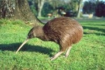

Clicca sul kiwi per il video informativo
I kiwi hanno un peso che va da 1 kg del kiwi maculato minore ai 3–5 kg del kiwi australe, per una lunghezza compresa fra i 35 e i 65 cm. Gli esemplari di sesso femminile sono più grandi dei maschi della stessa specie, soprattutto poco prima di deporre le uova. La testa è relativamente piccola con un collo lungo e piuttosto robusto. I muscoli toracici sono poco sviluppati, mentre tutta la parte inferiore del corpo (bacino, zampe e piedi) è molto robusta.
Il kiwi si nutre per lo più di
invertebrati come:
- Ragni
- Insetti
- Larve
- Lumache
- Chiocciole
- Lombrichi
e occasionalmente mangiano anche:
- Frutta caduta
- Piccoli pesci
- Anfibi

| NOME SCIENTIFICO |
NOME COMUNE |
LOCALIZZAZIONE |
pRESENZE(censimento 1996) |
TENDENZA PRESENZE (stima al 2006) |
| Daniele |
Rossi |
| Marta |
Verdi |